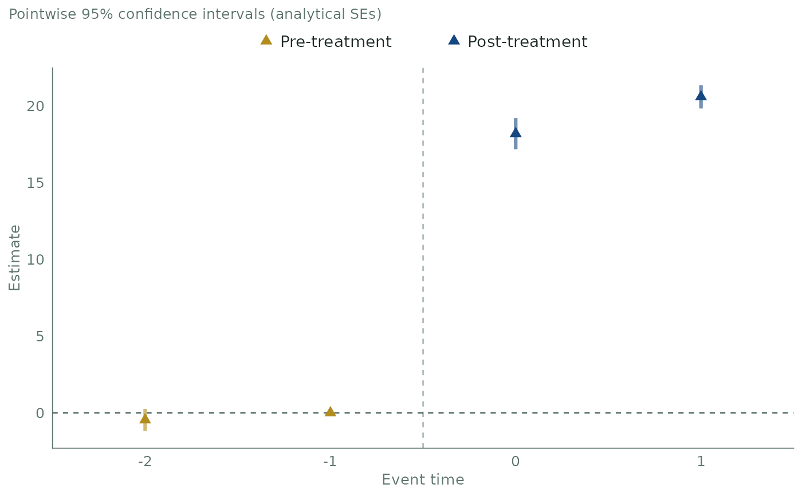
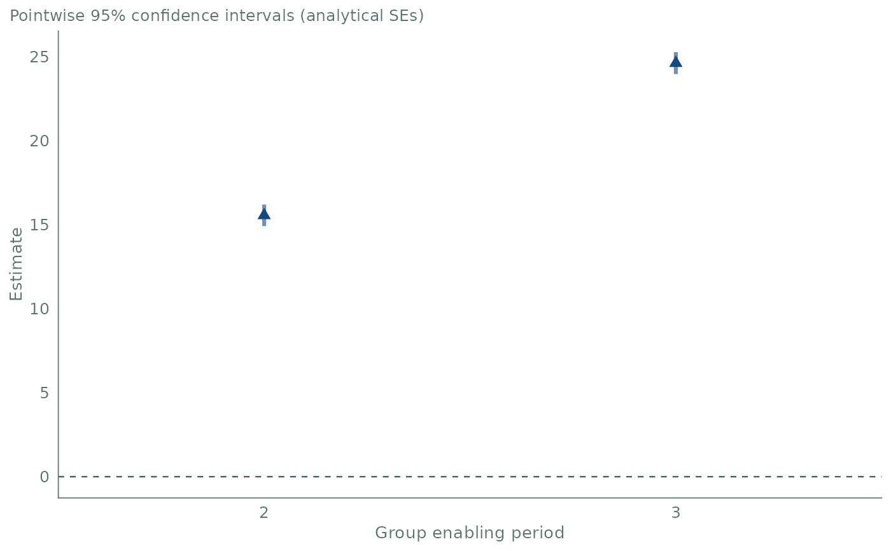

Plot aggregated DDD effects
plot.agg_ddd.RdDraws the path of an event-study, group or calendar aggregation computed by
agg_ddd(). Each estimate is a triangle with its confidence interval as a
thick bar in a lighter tint of the same color. Pre-treatment estimates are
gold and post-treatment estimates are dark blue. A dashed horizontal line
marks zero.
Usage
# S3 method for class 'agg_ddd'
plot(
x,
ylim = NULL,
xlab = NULL,
ylab = "Estimate",
title = NULL,
subtitle = "auto",
...
)Arguments
- x
An
agg_dddobject returned byagg_ddd()withtype = "eventstudy","group"or"calendar".- ylim
NULL(default) or a numeric vector of length 2 with finite values. It zooms the vertical (estimate) axis without removing data. The range shown is always widened to include zero.- xlab
NULL(default) or a single character string.NULLuses the default label of the aggregation type:"Event time","Group enabling period"or"Calendar period".- ylab
NULLor a single character string for the vertical axis label. Default is"Estimate".NULLremoves the label.- title
NULL(default, no title) or a single character string.- subtitle
"auto"(default),NULL, or a single character string."auto"describes the intervals drawn, for example"Pointwise 95% confidence intervals (analytical SEs)".NULLremoves the subtitle.- ...
Not used.
Details
The intervals are the ones stored in the object: the uniform confidence band
when cband = TRUE was used, pointwise intervals otherwise. The plot does not
recompute them with another critical value.
In an event study, estimates at event times e < 0 are pre-treatment and
estimates at e >= 0 are post-treatment. A dashed vertical line at
e = -0.5 separates the two. The line appears only
when pre- and post-treatment estimates are present. Group and calendar
aggregations average post-treatment cells only, so all their estimates are
post-treatment. The legend is at the top and appears only when both kinds of
estimates are present.
The vertical axis always includes zero, with or without ylim. Estimates
that are NA are not drawn, with a warning.
ggplot2 version 3.5.0 or later must be installed. It is a suggested package.
The result is a regular ggplot object, so it can be changed with +, for
example plot(es) + ggplot2::labs(title = "Event study"). A color scale
added with + changes the colors of the triangles and of the bars.
Examples
if (requireNamespace("ggplot2", quietly = TRUE)) {
set.seed(1234)
data <- gen_dgp_mult_periods(size = 500, dgp_type = 1)[["data"]]
out <- ddd(yname = "y", tname = "time", idname = "id", gname = "state",
pname = "partition", xformla = ~cov1 + cov2 + cov3 + cov4,
data = data, control_group = "nevertreated",
base_period = "universal", est_method = "dr")
print(plot(agg_ddd(out, type = "eventstudy")))
print(plot(agg_ddd(out, type = "group")))
}

